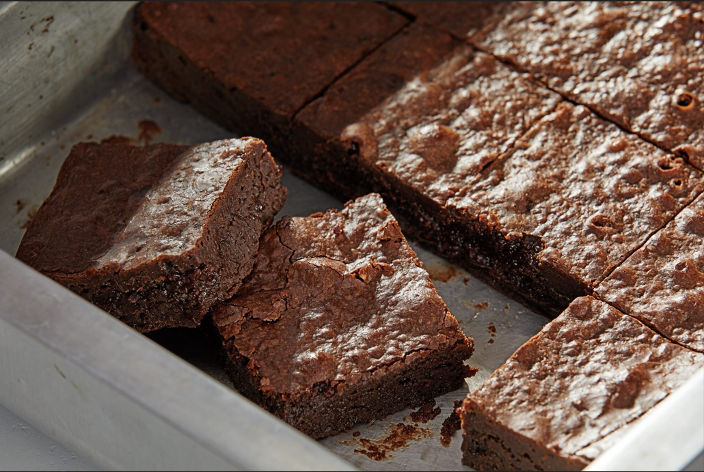
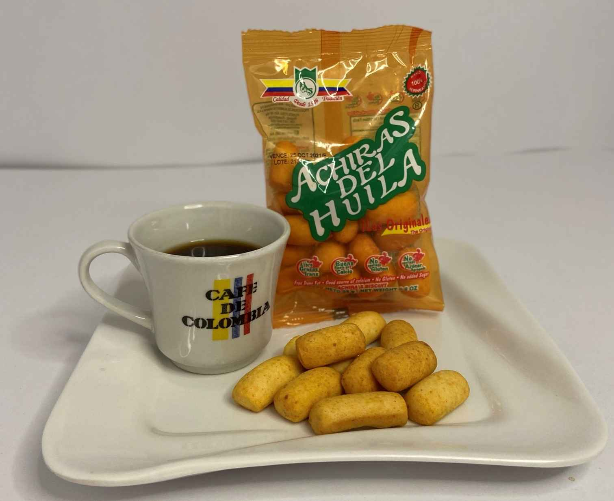
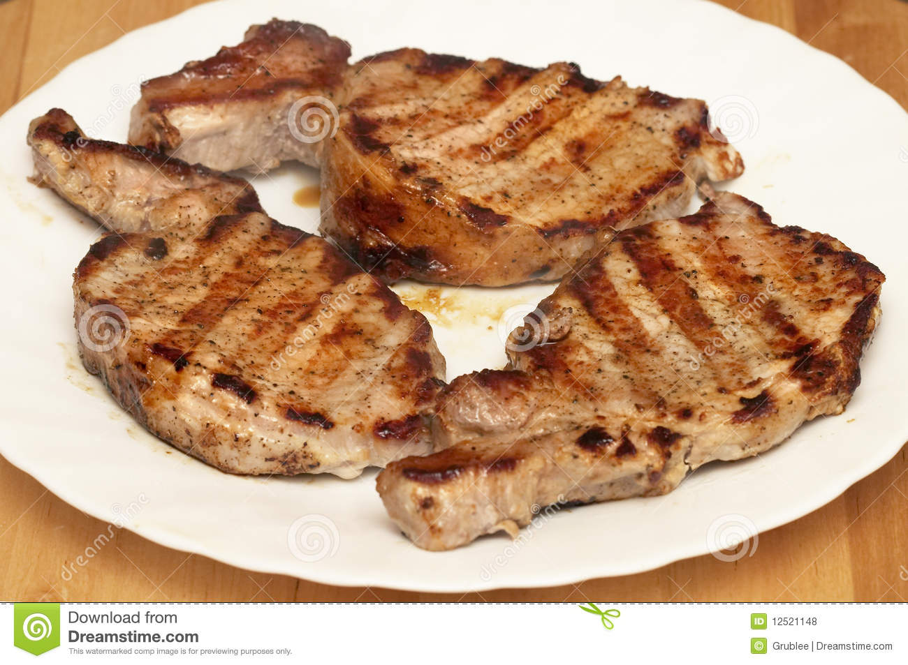

Un nuevo año...
Muchas personas al empezar el año se proponen hacer ejercicio para ponerse supermamadisimos, pero ¿realmente se puede lograr?

He aqui algunos obtaculos que las personas tienen que enfrentar al intentar ser "fit"...
Muchas personas al empezar el año se proponen hacer ejercicio para ponerse supermamadisimos, pero ¿realmente se puede lograr?
He aqui algunos obtaculos que las personas tienen que enfrentar al intentar ser "fit"...
Uno de los mejores postres ever son los brownies y no necesariamente los "Happy".
Con uno de estos no es suficiente.
Estas delicias con tinto o chocolate es la mejor combinación para cualquier hora del día.
Un paquete para una persona no es suficiente.
En ocasiones me dan ganas de ser vegetariano, pero luego recuerdo esta delicia y se me pasa, I'm sorry Mr. Presi.
Con una sola tajada de carne de cerdo al almuerzo no es suficiente.
Con todo lo visto hoy, podemos determinar que aunque lo intentes, nunca podras ser fit, vuelve pronto.